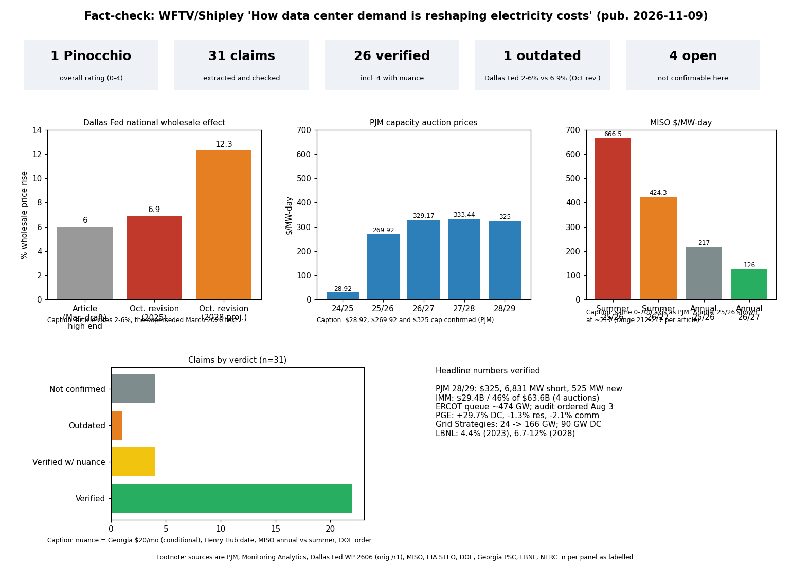

The WFTV piece (a syndicated Stacker article by Lucas Winter for Shipley Energy, 9 Nov 2026) is mostly accurate: about 26 of 31 claims checked out. I rate it 1 Pinocchio (0-4 scale) because one headline figure is out of date and a few details lose context.
What would change the rating: a primary source showing the 15% and North Dakota figures wrong would move it toward 2; confirming them leaves 1. I could not read the NERC PDF and Monitoring Analytics reports in full.
| Claim | Verdict | Evidence | Confidence |
|---|---|---|---|
| EIA: residential price 17.3 to 18.2 c/kWh 2026 | Verified | EIA STEO: 17.30 (2025), 18.21 (2026). 'Record 2026 sales' not confirmed in my search. | medium |
| LBNL: 4.4% of US electricity in 2023; 6.7-12% by 2028 | Verified | LBNL 2024 US Data Center Energy Usage Report (176 TWh; 325-580 TWh 2028). A projection, not a measurement. | high |
| Utility 5-yr peak growth forecast ~166 GW vs ~24 GW three years ago; ~90 GW data centers; analysts ~65 GW | Verified | Grid Strategies National Load Growth Report 2025 (Nov 2025). The 24 GW baseline is a retrospective 2022 figure. | high |
| Dallas Fed: existing data centers raised wholesale prices 2-6% | Outdated | The March 2026 draft said 2-6%. The October 2026 revision (wp2606r1) says 6.9% nationally by 2025, 15.0% in N. Virginia, 12.3% by 2028 (preferred scenario). Article cites the superseded range; the paper's own 'half of retail' statement was not located. | high |
| PJM capacity price $28.92 -> $269.92 -> federal cap | Verified | PJM BRA results; cap $329.17 (26/27), $333.44 (27/28). | high |
| PJM 2028/29 cleared $325, 6,831 MW short | Verified | PJM release 14 Jul 2026 and RTO Insider. | high |
| PJM 2028/29 added only 525 MW new generation/uprates | Verified | PJM / EPSA / Simcore (2,669 then 774 then 525 MW in capped auctions). | high |
| Market monitor: ~46% of capacity costs over last four auctions = $29.4B | Verified with nuance | Monitoring Analytics: $29.4B of $63.6B. Method not yet published; some outlets call it a cost increase caused by data center load, not 'costs'. | medium |
| MISO summer 2025/26 record $666.50 | Verified | MISO PRA results; 2026/27 summer fell to $424.30 (LRZ 1-7). | high |
| MISO 2026/27 $116-126 vs $212-217; solar helped | Verified with nuance | Annualized prices (Aurora). Article does not say these are annual, not summer ($424.30). Aurora credits 4.8 GW accredited additions. | medium |
| Abbott ordered data center audit; >474 GW of requests; connections paused | Verified | Abbott letter 3 Aug 2026; Utility Dive, Holland & Knight, Seyfarth. Pause covers pending data center interconnections until audit; many requests are speculative. | high |
| Georgia Power large-load pipeline 16,000 MW (2023) to ~69,000 MW (Dec 2025) | Verified | Georgia PSC staff report via Atlanta News First. | high |
| Georgia Power ~$950M annual customer savings from 2029 | Verified with nuance | Georgia Power press release, Aug 2026. Company projection, not regulator finding. | high |
| PSC staff warned buildout could add ~$20/month to residential bills | Verified with nuance | Nov 2025 staff testimony: $20 or more if demand fell short of forecast. Article omits the condition. The Dec 2025 stipulation added protections. | medium |
| Oregon: data centers ~15% of IOU load | Not confirmed | No primary source found. | low |
| PGE rates approved July 2026: data center +29%, residential -1.3%, commercial -2.1% | Verified | Oregon PUC approval 7 Jul 2026; OPB gives 29.7%. | high |
| North Dakota demand ~+40%, real price down ~3 c/kWh | Not confirmed (primary) | Found only in Stacker/Shipley copies attributed to LBNL/Brattle; underlying document not located. | low |
| NERC: 13 of 23 areas elevated/high risk within five years | Verified | NERC 2025 LTRA via POWER; PDF not read in full. | medium |
| Grid Strategies argues NERC overstates risk | Verified | Grid Strategies Mar 2026 report (Utility Dive). | high |
| Gas ~44% of PJM 2024 generation | Not confirmed | Secondary source says 44-45%; Monitoring Analytics report not checked. | low |
| Henry Hub record ~$30.57 on Jan 26, 2026 | Verified with nuance | NGI: $30.565 daily avg on Jan 26. EIA/AGA put the record at $30.72 on Jan 23. Sources disagree on date and value. | medium |
| PJM West Hub $2,323/MWh the next day | Verified | CBRE and Stacker copies. | medium |
| DOE order lets PJM direct large facilities incl. data centers to backup generation | Verified | DOE Section 202(c) order 26 Jan 2026, extended to 2 Feb. | high |
| AEP Ohio: >25 MW data centers pay for >=85% of subscribed capacity, up to 12 years | Verified | PUCO approval July 2025; term includes ramp-up, 12 years is the maximum. | high |
| Dominion rate class for 25 MW+, effective 2027 | Verified | SCC order 25 Nov 2025, GS-5, effective 1 Jan 2027. | high |
| Oregon separate class for data centers above 20 MW | Verified | HB 3546 (POWER Act). | high |
| Georgia commission will review large-load contracts | Verified | PSC approved the OpenAI contract Aug 2026; review continues. | medium |
| Data Center Coalition criticized some Oregon rules | Not confirmed | Not searched for a primary statement. | low |
| Three factors determine local impact; wholesale ~ half of retail | Not checkable as fact | Analytical framing; the half-of-retail ratio is attributed to the Dallas Fed and unlocated. | low |
Answer: 1 Pinocchio. Key values: Dallas Fed 6.9% (2025) vs piece's 2-6%; PJM $325/MW-day, 6,831 MW short, 525 MW new (2028/29); IMM $29.4B of $63.6B (46%, four auctions); ERCOT ~474 GW; PGE +29.7%/-1.3%/-2.1% (July 2026). Confidence: high on auction, tariff and agency numbers (primary documents); medium on third-hand items.